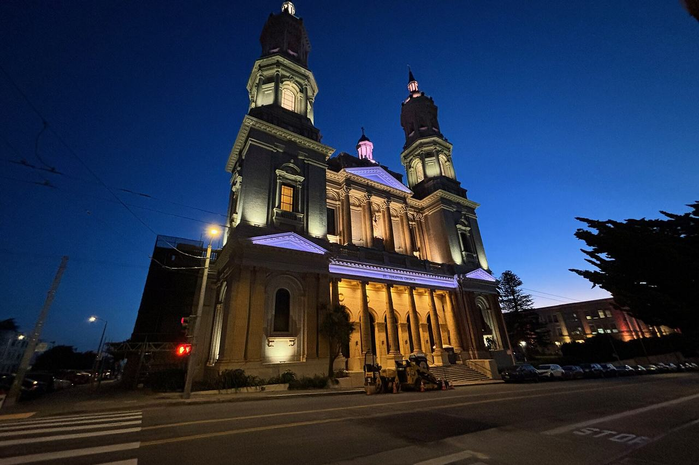

Lone Mountain / USF
A district on the rise between the Richmond and the Panhandle, around the University of San Francisco and the former Lone Mountain cemeteries.

Map
Named buildings and landmarks
-

-
-
-

-

Streets documented so far
- Anza Street
1 building, built 1906. - Baker Street
1 building, built 1904; 1 in the NOPA Historic District. - Balboa Street
1 building, built 1984. - Beaumont Avenue
1 building, built 1936. - Blake Street
1 building, built 2000. - Collins Street
1 building, built 1976. - Cook Street
2 buildings, built 1901–1926. - Fulton Street
A nineteen-room 1904 house facing Golden Gate Park, bought by Jefferson Airplane in 1968. - Geary Boulevard
1 building, built 1999. - Golden Gate Avenue
First A.M.E. Zion Church, built in 1960, whose landmark designation the city initiated in 2026. - Grove Street
1 building, built 1906; 1 in the Panhandle Historic District. - Hayes Street
1 building, built 1908; 1 in the Southern Pacific Company Hospital Historic District. - Loraine Court
1 building, built 1900. - Masonic Avenue
1 building, built 1900. - Mcallister Street
1 building, built 1900. - Shrader Street
1 building, built 1908. - Stanyan Street
1 building. - Turk Boulevard
1 building. - Vega Street
1 building.
Historic districts here
Adjacent neighborhoods
Presidio Heights adjoins north-west and the Inner Richmond west across Arguello Boulevard. The Western Addition begins east of Masonic Avenue, and Hayes Valley lies south-east beyond the Panhandle.